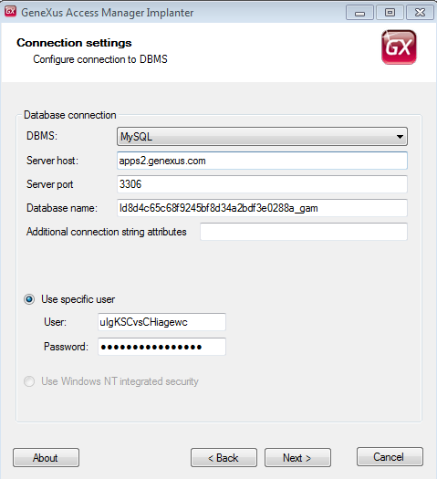
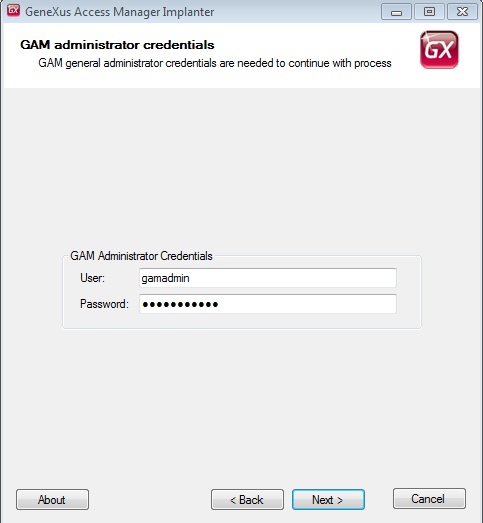
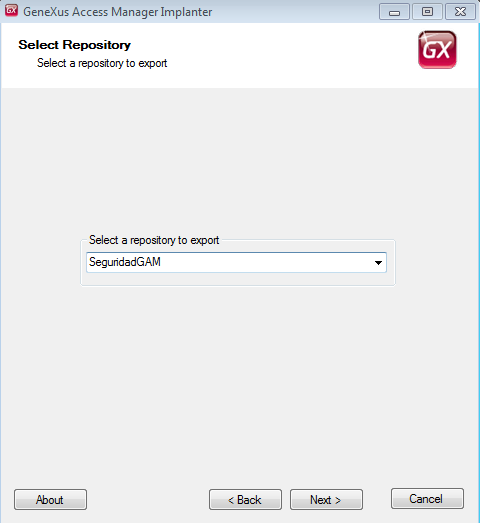
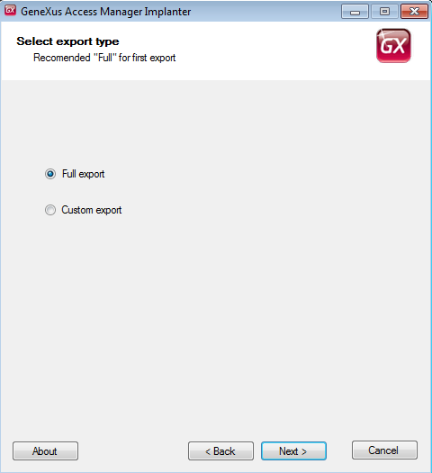
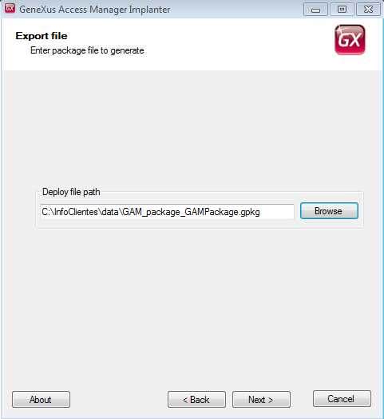

One of the purposes of GAM Deploy Tool is to allow administrators of GAM Manager Repository to export data from an existing GAM Repository and import data into another Repository, of the same GAM datastore, or another one. The following sections explain the Export deploy process of GAM Deploy Tool. How to export data from a Repository1. Execute GAM Deploy Tool. Run it from GeneXus options (Tools -> GAM -> Create Deploy File), or as a standalone tool (execute GamDeployTool.exe). 2. The first screen asks for the DBMS connection settings. There you need to enter the connection settings of the GAM datastore.  3. In the second step you are asked to enter the credentials of GAM Manager Repository administrator (gamadmin user).  4. Afterwards you are asked to specify the Repository of GAM database from where data is going to be retrieved.  5. There is the option of doing a full export, or a custom export (the latter option asks the user to specify further information later).  6. Finally, specify the path and package name where the information is going to be saved.  The file .gpkg generated is a zipped file which includes the following:
See alsoImport Users - GAM Deploy Tool |
| Backlinks | ||
| GAM Deploy Tool | GAM Deploy Tool: Import Data | GAM Manager Repository |
| GAM options in GeneXus toolbar | ||
| HowTo: Update a repository from a GAM deploy tool package |